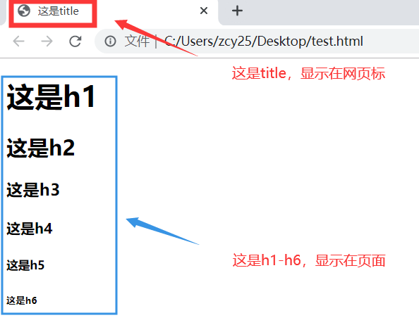
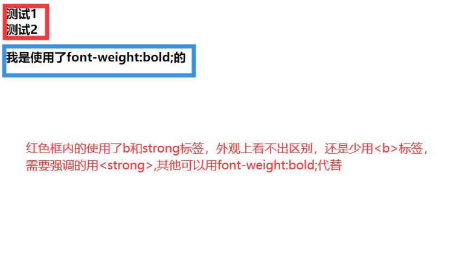
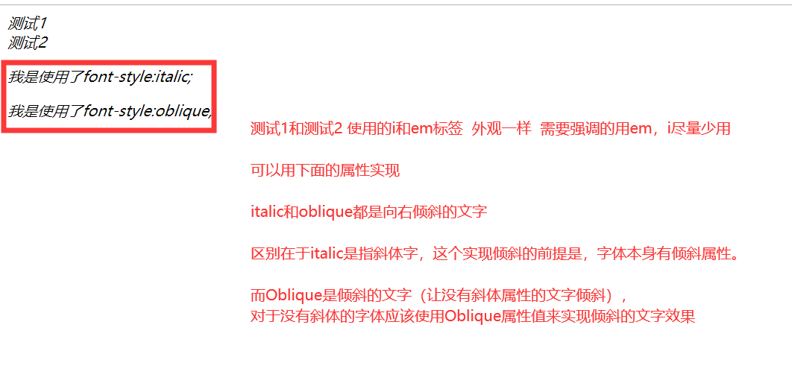
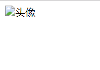
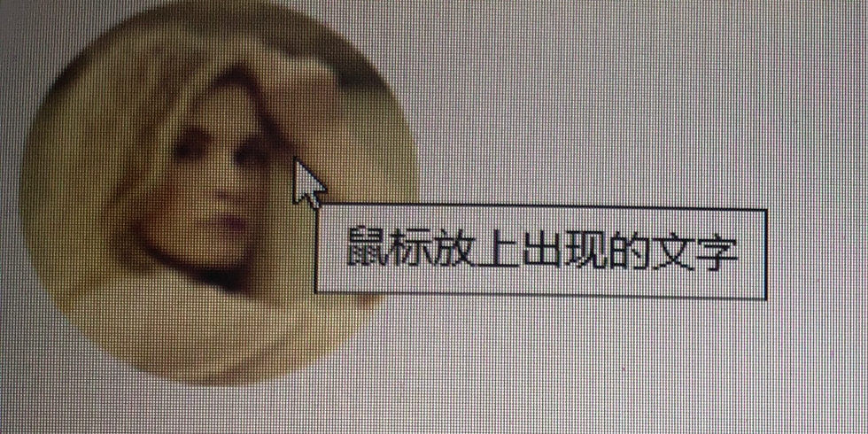
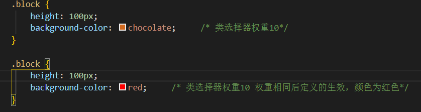
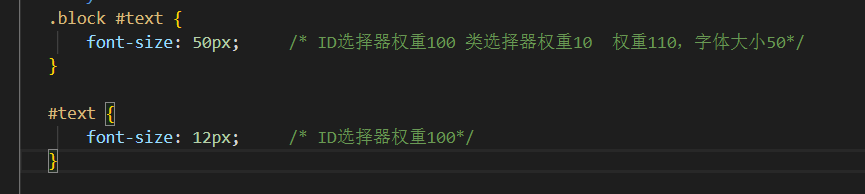
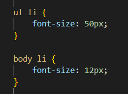
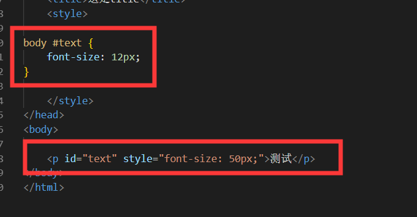

分享人：朱春雨
目录
1.背景介绍
2.知识剖析
3.常见问题
4.解决方案
5.编码实战
6.扩展思考
7.参考文献
8.更多讨论
title:在 <title>和</title>标签之间的文字内容是网页的标题信息，它会出现在浏览器的标题栏。网页的 <title>标签用于告诉用户和搜索引擎这个网页的主要内容是什么，搜索引擎可以通过网页标题，迅速的判断出网页的主题。每个网页的内容都是不同的，每个网页都应该有一个独一无二的title。当把网站加入用户收藏夹或书签列表时，标题将成为该文档链接的默认名称。
h1:<h1>-<h6>标签被用来定义 HTML 标题,不继承父级的字体大小。h1定义重要等级最高的标题。h6定义重要等级最低的标题。
b和strong标签的区别: <b>标签和<strong>标签产生的效果是相同的，现在不推荐使用b标签，而是推荐使用<strong>，
<b>标签是字体外观的加粗效果。b是bold的简写，意思是粗体。而<strong>是指突出，重点，表示其中的内容具有更高的价值。对于搜索引擎优化来说，用<strong>更容易让用户搜索到关键词，但是如果页面上有太多的<strong>标签，可能不利于排名。虽然<strong>标签更利于排名，但也需较少的使用。
i和em标签： <i>和<em>标签都是表示斜体。 <i>标签表示对所包含内容显示斜体文本效果。<em>标签中的文本表示为强调的内容，对于所有浏览器的显示效果来说，是把这段文字用斜体来显示。<i>也有作为小图标使用。阿里巴巴图库的一种引用方式就是用<i></i>引入的。
img中的alt与title属性区别:"alt"属性是图片因为某种原因不能加载时在页面显示的提示信息，它会直接输出在原本加载图片的地方，"title"属性是鼠标悬停在该图片上时显示一个小提示，鼠标离开就没有了。
src与href的区别:“href” 表示超文本引用，在 link和a 等元素上使用。src 表示来源地址，在 img、script、等元素上。src 的内容，是页面必不可少的一部分，是引入。href 的内容，是与该页面有关联，是引用。区别就是，引入和引用。
title与h1的区别
b与strong的区别
i和em标签的区别
img中的alt与title属性区别
alt是图片无法显示出现的文字，title是鼠标放在上面出现的文字。
 CSS权重
CSS权重指的是样式的优先级，有两条或多条样式作用于一个元素，权重高的那条样式对元素起作用,权重相同的，后写的样式会覆盖前面写的样式。
可以把样式的应用方式分为几个等级，按照等级来计算权重
1、!important，加在样式属性值后，权重值为 10000
2、内联样式，style=""，权重值为1000
3、ID选择器，#，权重值为100
4、类，伪类和属性选择器，如：:hover 权重值为10
5、标签选择器和伪元素选择器，如：div、p、:before 权重值为1
6、通用选择器（*）、子选择器（>）、相邻选择器（+）、同胞选择器（~）、权重值为0
注意：id=100并不是指id的一个权重值就是100，实际上这个100是一个进制数，不是2进制，也不是10进制；而是256进制，就是0到255后+1才是1。
例如通配符的权重值0到标签伪元素的权重值1，中时间实际上差了255。依次类推
怎么计算权重
给上面的.block前面加body，权重为12，颜色以上面的为准
给谁加“!important”谁生效 权重加10000
权重相同，后定义的生效
行内style权重1000，字体大小50px
权重很重要，只要好好理解其实不难。
多试！多试！多试！试到理解为止！加油！
https://blog.csdn.net/vivian_1122/article/details/802350522